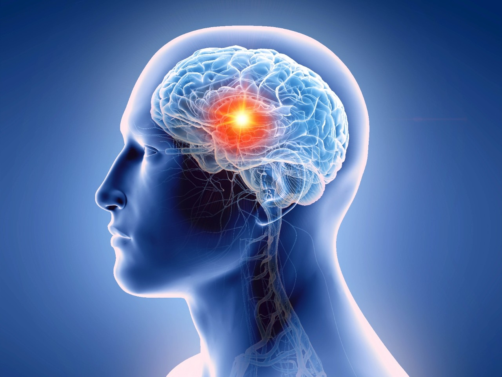

A brain tumor is an abnormal growth of cells within the brain. These
tumors, characterized by their potential to be either benign or
malignant, can originate within the brain itself (primary tumors) or
migrate from other parts of the body (metastatic tumors). Their
genesis often stems from genetic mutations, exposure to ionizing
radiation, or other environmental influences.
Types of Brain Tumors
The landscape of brain tumors is as diverse as the human experience.
Gliomas, arising from the brain's supportive glial cells, encompass
various subtypes, each presenting unique challenges in diagnosis and
treatment. Meningiomas, originating from the protective membranes
surrounding the brain and spinal cord, pose distinct considerations
due to their often slow-growing nature. Pituitary adenomas, nestled
within the hormonal command center of the brain, disrupt endocrine
function with profound consequences. Additionally, metastatic brain
tumors, arising from distant sites such as the lungs or breasts,
present formidable diagnostic and therapeutic dilemmas.
Prognosis
The prognosis for individuals with brain tumors is as varied as the
tumors themselves. Factors such as the tumor's histological type,
location, size, and molecular characteristics, along with the
individual's overall health and treatment response, intricately shape
the journey ahead. While some tumors may respond favorably to
treatment and afford a favorable prognosis, others may prove
recalcitrant to current therapeutic modalities, necessitating ongoing
research and innovation to improve outcomes.
Requires a Medical Diagnosis
Symptoms include new or increasingly strong headaches, blurred vision,
weakness of limbs, loss of balance, confusion, and seizures. In some
cases, there may be no symptoms.
People may experience:
- Headache: can be persistent or severe
-
Muscular: difficulty walking, muscle weakness, problems with
coordination, weakness of one side of the body, or weakness of the
arms and legs
- Whole body: dizziness, fatigue, or vertigo
- Gastrointestinal: nausea or vomiting
- Sensory: pins and needles or reduced sensation of touch
-
Cognitive: inability to speak or understand language or mental
confusion
-
Also common: balance disorder, blurred vision, difficulty speaking,
personality change, seizures, or sleepiness
Brain Tumor Symptoms by Location
Lobes in the Brain
The main part of the brain is called the cerebrum. Brain tumors in
different parts of the cerebrum might cause different symptoms.
Brain Tumors in the Front of the Brain
The frontal lobes are in the front of the brain. They control thinking
and movement. Frontal lobe brain tumors might cause balance problems
and trouble walking. There might be personality changes, such as
forgetfulness and lack of interest in usual activities. Sometimes
family members notice that the person with the brain tumor seems
different.
Brain Tumors in the Middle of the Brain
The parietal lobes are in the upper middle part of the brain. They
help process information about touch, taste, smell, vision, and
hearing. Parietal lobe brain tumors can cause problems related to the
senses. Examples include vision problems and hearing problems.
Brain Tumors in the Back of the Brain
The occipital lobes are in the back of the brain. They control vision.
Occipital lobe brain tumors can cause vision loss.
Brain Tumors in the Lower Part of the Brain
The temporal lobes are on the sides of the brain. They process
memories and senses. Temporal lobe brain tumors can cause memory
problems. They might cause someone to see, taste, or smell something
that isn't there. Sometimes the taste or smell is unpleasant or
unusual.
The treatment of brain tumors is a complex and multifaceted process
that often requires a combination of therapies tailored to the
individual patient's specific diagnosis, tumor type, location, and
overall health. Below are some of the main treatment modalities used:
1. Surgery
Surgical resection, the removal of the tumor through an operation, is
often the first-line treatment for many brain tumors. The goal of
surgery is to remove as much of the tumor as possible while preserving
neurological function. In some cases, complete removal may not be
feasible due to the tumor's location or size.
2. Radiation Therapy
Radiation therapy uses high-energy beams of radiation to target and
destroy cancer cells. It can be delivered externally through a machine
(external beam radiation) or internally through implanted radioactive
seeds (brachytherapy). Radiation therapy may be used as a primary
treatment, adjuvant therapy following surgery, or palliative therapy
to relieve symptoms and improve quality of life.
3. Chemotherapy
Chemotherapy involves the use of powerful drugs to kill cancer cells
or inhibit their growth. Chemotherapy for brain tumors may be
administered orally, intravenously, or directly into the cerebrospinal
fluid (intrathecal chemotherapy). It is often used in combination with
surgery and/or radiation therapy, particularly for aggressive or
recurrent tumors.
4. Targeted Therapy
Targeted therapy utilizes drugs or other substances that specifically
target and interfere with the molecular pathways involved in tumor
growth and survival. These treatments are often tailored to the
specific genetic mutations or biomarkers present in the tumor cells.
Targeted therapy may be used alone or in combination with other
treatments.
5. Immunotherapy
Immunotherapy harnesses the body's immune system to recognize and
attack cancer cells. This may involve the use of immune checkpoint
inhibitors, which help activate the immune response against tumor
cells, or therapeutic vaccines, which stimulate the immune system to
target the tumor. Immunotherapy is an area of active research in the
treatment of brain tumors.
6. Stereotactic Radiosurgery
Stereotactic radiosurgery is a non-invasive technique that delivers
precisely targeted radiation to the tumor while minimizing exposure to
surrounding healthy tissue. It is often used for small tumors or as a
boost after conventional radiation therapy. Despite its name,
stereotactic radiosurgery does not involve actual surgery.
7. Supportive Care
In addition to specific treatments targeting the tumor, supportive
care plays a crucial role in managing symptoms, improving quality of
life, and addressing the physical, emotional, and psychosocial needs
of patients and their families. This may include pain management,
physical therapy, occupational therapy, speech therapy, nutritional
support, counseling, and palliative care.
Conclusion
The treatment of brain tumors requires a multidisciplinary approach
involving collaboration among neurosurgeons, neuro-oncologists,
radiation oncologists, medical oncologists, neuropathologists, and
other healthcare professionals. Advances in research and technology
continue to expand the treatment options available and improve
outcomes for patients with brain tumors.
Brain Tumors that Begin in the Brain
Brain tumors that start as a growth of cells in the brain are called
primary brain tumors. They might start right in the brain or in
the tissue nearby. Nearby tissue might include the membranes that
cover the brain, called meninges. Brain tumors also can happen in
nerves, the pituitary gland, and the pineal gland.
Brain tumors happen when cells in or near the brain get changes in
their DNA. A cell's DNA holds the instructions that tell the
cell what to do. The changes tell the cells to grow quickly and
continue living when healthy cells would die as part of their natural
life cycle. This makes a lot of extra cells in the brain. The cells
can form a growth called a tumor.
It's not clear what causes the DNA changes that lead to brain tumors.
For many people with brain tumors, the cause is never known. Sometimes
parents pass DNA changes to their children. The changes can increase
the risk of having a brain tumor. These
hereditary brain tumors are rare. If you have a family history
of brain tumors, talk about it with your health care provider. You
might consider meeting with a health care provider trained in genetics
to understand whether your family history increases your risk of
having a brain tumor.
When brain tumors happen in children, they're likely to be primary
brain tumors. In adults, brain tumors are more likely to be cancer
that started somewhere else and spread to the brain.
Cancer that Spreads to the Brain
Secondary brain tumors happen when cancer starts somewhere else and
spreads to the brain. When cancer spreads, it's called
metastatic cancer.
Any cancer can spread to the brain, but common types include:
- Breast cancer.
- Colon cancer.
- Kidney cancer.
- Lung cancer.
- Melanoma.
It's not clear why some cancers spread to the brain and others are
more likely to spread to other places.
Secondary brain tumors most often happen in people who have a history
of cancer. Rarely, a brain tumor may be the first sign of cancer that
began somewhere else in the body.
In adults, secondary brain tumors are far more common than are primary
brain tumors.
Risk Factors
In most people with primary brain tumors, the cause isn't clear. But
doctors have identified some factors that may raise the risk.
Risk factors include:
-
Age: Brain tumors can happen at any age, but they happen most
often in older adults. Some brain tumors mostly affect adults. Some
brain tumors happen most often in children.
-
Race: Anyone can get a brain tumor. But some types of brain
tumors are more common in people of certain races. For example,
gliomas are more common in white people. Meningiomas are more common
in Black people.
-
Exposure to Radiation: People who have been exposed to a
strong type of radiation have an increased risk of brain tumor. This
strong radiation is called ionizing radiation. The radiation is
strong enough to cause DNA changes in the body's cells. The DNA
changes can lead to tumors and cancers. Examples of ionizing
radiation include radiation therapy used to treat cancer and
radiation exposure caused by atomic bombs. Low-level radiation from
everyday objects isn't linked to brain tumors. Low levels of
radiation include the energy that comes from cellphones and radio
waves. There is no convincing evidence that using cellphones causes
brain tumors. But more studies are happening to make sure.
-
Inherited Syndromes: Some DNA changes that increase the risk
of brain tumor run in families. Examples include the DNA changes
that cause neurofibromatosis 1 and 2, tuberous sclerosis, Lynch
syndrome, Li-Fraumeni syndrome, Von Hippel-Lindau disease, familial
adenomatous polyposis, Cowden syndrome, and Gorlin syndrome.